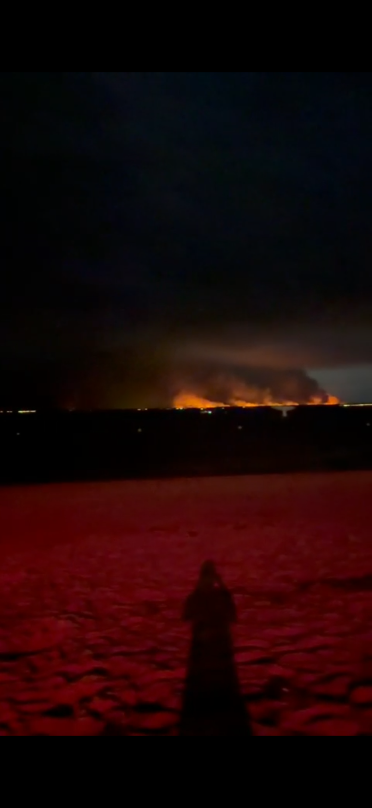

Avant toute chose.
Nos pensées vont aux deux sapeurs-pompiers qui ont perdu la vie en nous protégeant, ainsi qu'à leurs familles. Et à toutes celles et ceux qui, jour et nuit, tiennent la ligne face aux flammes pour défendre la Gironde et ses habitants.
Le respect avant les mots.
Depuis la mi-juillet, la Gironde vit une série d'incendies parmi les pires de son histoire. Comme ailleurs en France cet été, le feu a gagné du terrain, et les évacuations se sont enchaînées, commune après commune, jusqu'aux portes de la métropole. Plus de 140 000 personnes ont dû quitter leur domicile.
Face à cette vague, Thomas Cazenave a pris une décision à saluer : l'ouverture du parc des expositions de Bordeaux, transformé en centre d'accueil. Jusqu'à 10 000 places, des lits, de l'eau, des repas chauds, un espace pour les animaux, des douches. Des milliers de sinistrés y ont trouvé un refuge. Dans l'urgence, la ville a été à la hauteur, et son maire aussi.
Mais gérer une crise quand elle éclate, c'est une chose. Avoir tout fait pour l'affronter, avant qu'elle arrive, en est une autre.
Reprenons depuis le début. Février 2024. Thomas Cazenave est alors ministre chargé des Comptes publics. À ce titre, il contresigne un décret qui annule 10 milliards d'euros de crédits — dont 52,8 millions sur le budget de la Sécurité civile. Conséquence directe, confirmée par la Direction générale de la sécurité civile et deux rapports parlementaires : l'État renonce à commander deux Canadair supplémentaires. Deux avions bombardiers d'eau en moins, en pleine ère des méga-feux.

Ces deux Canadair, aujourd'hui, on les cherche. Le feu est tel que la France a dû demander l'aide de ses voisins européens : des Canadair croates, des avions portugais, des hélicoptères venus de Tchéquie et de Slovaquie sont venus prêter main-forte. Un comble, pour un pays qui, d'ordinaire, envoie ses avions secourir la Grèce ou l'Espagne. Cette fois, c'est nous qui avons tendu la main.
Deux ans plus tard, le voilà maire de Bordeaux. Et l'une de ses priorités affichées, son "plan Marshall de la sécurité" : porter le budget sécurité de la ville à 20 millions d'euros, doubler la police municipale, armer tous les agents.
Deux décisions, deux fonctions différentes — soyons précis : on ne finance pas les Canadair avec le budget municipal de Bordeaux. Mais c'est le même homme, et la même logique. Quand il s'agit de police et de caméras, les millions sont là. Quand il s'agit des moyens de secours, on coupe.
Et il y a un troisième détail. Les pompiers de Gironde, le SDIS, sont financés par le département et par la métropole. Cette métropole que Thomas Cazenave préside également.
Alors posons la vraie question. Quand on parle de "sécurité", pourquoi ne pense-t-on jamais à eux ? Un pompier protège autant qu'un policier — souvent plus. Il éteint les feux, désincarcère, secourt, relève. En Gironde, ce sont eux qui tiennent la ligne pendant que la forêt part en fumée. Deux d'entre eux y ont laissé la vie cette semaine.
Mais dans les budgets, dans les discours, dans les "plans Marshall", ce sont toujours les caméras et les effectifs de police qui raflent la mise. Jamais les casernes.

Depuis des années, la recette est la même : plus de caméras, plus de policiers. À Bordeaux comme ailleurs, on a déployé des centaines de caméras dont l'efficacité réelle sur la délinquance reste, au mieux, contestée. On répète ce qui ne fait pas ses preuves, et on appelle ça un "plan Marshall".
Pendant ce temps, une autre menace, elle, ne cesse de grandir. Elle ne se règle pas avec des caméras ni des rondes de nuit. Elle brûle nos forêts, elle asphyxie nos villes, elle tue nos pompiers. Et face à elle, on coupe les moyens.
Protéger,
mais protéger qui ?
Faudra-t-il voir Bordeaux disparaître sous les cendres pour comprendre l'urgence ?
On nous expliquera que ces feux sont d'origine humaine, un accident. Sans doute. Mais cessons de faire comme si le reste n'existait pas : la sécheresse, les canicules à répétition, une forêt qui s'embrase comme jamais. Ça, ce n'est pas un accident. C'est le climat qui change, et il change vite.
On ne demande pas à un maire d'éteindre le feu à mains nues. On lui demande d'arrêter de couper dans les moyens de ceux qui le font. De cesser de traiter la menace de demain avec les réflexes d'hier.
Le feu ne demande pas votre carte d'électeur avant de frapper. Il emporte tout — les maisons, les forêts, les animaux qu'on lâche en catastrophe pour qu'ils fuient les flammes. Il touche tout ce qui vit.
Un maire ne gouverne pas que pour ceux qui l'ont élu. Il peut être tentant de répondre d'abord aux peurs de son électorat — l'insécurité, la délinquance. Mais le feu, la canicule, l'air irrespirable, eux, ne touchent pas que ses électeurs. Ils touchent chaque Bordelais, quel que soit son quartier, quel que soit son vote.
Contre le vol et la délinquance, oui. Mais aussi, et surtout, face aux dangers de demain — dont on voit déjà les couleurs aujourd'hui.
Ces dangers, nous les affronterons ensemble ou pas du tout. Face au feu, à la sécheresse, à ce qui vient, aucune caméra, aucun mur ne remplacera ce qui nous a toujours sauvés : l'entraide, la solidarité, la cohésion. Ces jours-ci, ce sont des inconnus qui ouvrent leur porte, des bénévoles qui distribuent l'eau, des pompiers venus de toute l'Europe. Voilà ce qui tient debout quand tout brûle.
Réparons demain les erreurs d'hier. Ensemble.
La sécurité, oui. Mais dans tous les sens du terme.